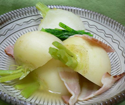

小カブのベーコン煮
- 調理時間：30 分
- （一人当たり）
- カロリー：122kcal
- たんぱく質：3.9g
- 脂質：7.9g
- 塩分：1.5g


＜４人分＞
- 小カブ
- ８個
- 小カブの葉
- 少々
- だし汁
- ５００ｍｌ
- 塩、コショウ
- 少々
- ベーコン
- ８０ｇ
- 生姜汁
- お好みで
Ａ
- ・みりん
- 大さじ２
- ・酒
- 大さじ１
- ・しょうゆ（薄口）
- 大さじ１


- カブの根部分は半分に切り、下ゆでする。葉は３～４ｃｍ長さに切る。ベーコンは２cm幅に切る。
- 鍋にだし汁とAの調味料、カブの根、ベーコンを加えて弱火で煮る。
- カブに火が通ったら、カブの葉を加え、塩、コショウで味をととのえる。
- 仕上げに生姜汁をしぼる（お好みで水溶き片栗粉を加えてとろみをつけてもよい）。
※調理後、一旦冷まし、味をしみ込ませるとよりおいしくなります。
小カブのベーコン煮
空気が澄み渡り気持ちのよい季節になりましたが、同時にそれは空気が乾燥していることを意味しています。乾いた空気が直接、呼吸器系に入ってくるため、口やのど、鼻がかわき、咳が出やすくなるのです。そのため、この季節は「肺」を潤し気のめぐりをよくする食べものを積極的にとりましょう。
旬のカブは、痰をとり、咳を鎮めるはたらきがあります。根の部分は食物繊維が多く、アミラーゼなどのデンプン分解酵素を含んでいるため、消化吸収を助け、便秘や下痢、胸やけにも効果があります。
体調を崩しやすい季節の変わり目は、じっくり加熱調理で体を芯からあたため、次の季節に備えましょう。